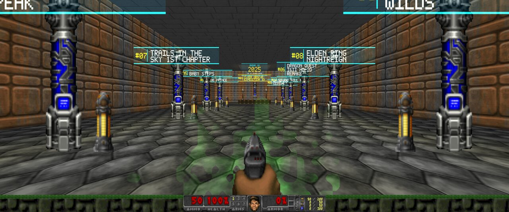
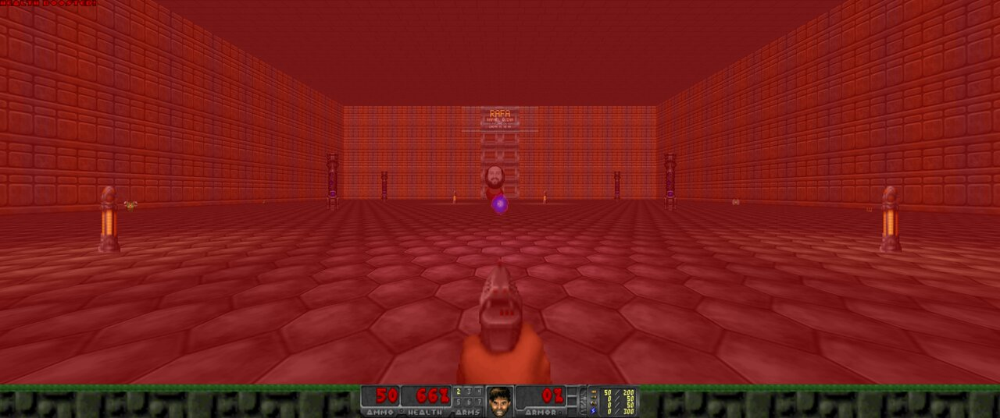
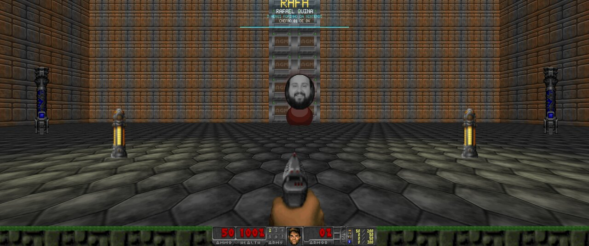
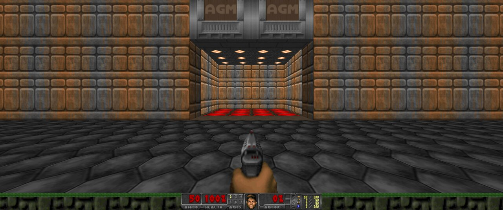
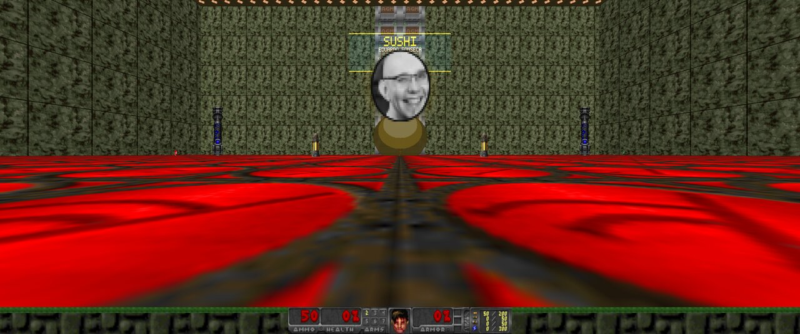
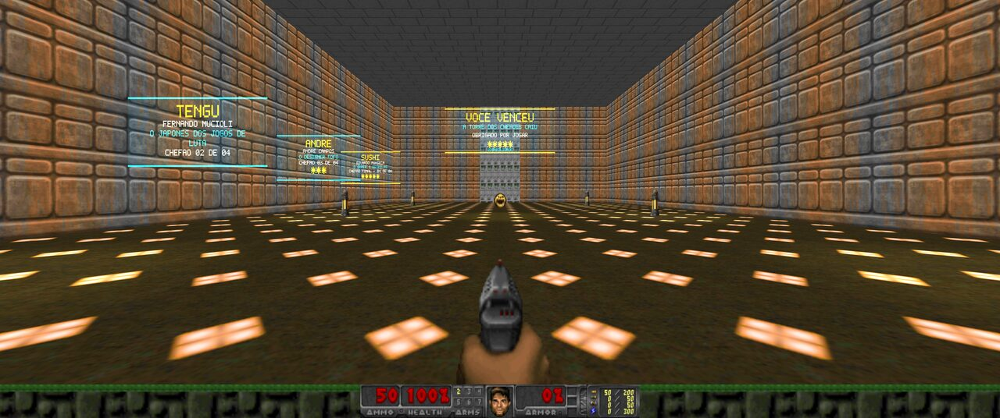
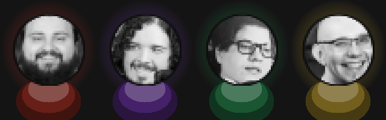

COMO JOGAR
O Jogabilidoom é um PWAD, um mapa que roda por cima do Doom. Você precisa de três coisas: o motor GZDoom, um IWAD (os arquivos-base do jogo) e o nosso WAD.
-
Instale o GZDoom
Baixe em zdoom.org/downloads (Windows e macOS) ou instale pelo gerenciador de pacotes da sua distribuição Linux. Use uma versão 4.x recente. O UZDoom, sucessor do GZDoom, também serve: é só trocar
gzdoomporuzdoomnos comandos abaixo. -
Arranje um IWAD
O mais simples é o Freedoom: Phase 2 (
freedoom2.wad), gratuito e livre: freedoom.github.io. Se você tem o Doom II original, odoom2.wadtambém funciona, e aí os monstros e as texturas são os clássicos. -
Baixe o Jogabilidoom
Use o botão lá em cima e coloque o
jogabilidoom.wadna mesma pasta do IWAD. -
Rode o jogo
No terminal, dentro da pasta onde estão os arquivos:
gzdoom -iwad freedoom2.wad -file jogabilidoom.wad +map MAP01
Para abrir o jogo digitando só
jogabilidoom, acrescente um atalho ao seu~/.bashrc(ou~/.zshrc), ajustando os caminhos:alias jogabilidoom='gzdoom -iwad ~/Jogos/freedoom2.wad -file ~/Jogos/jogabilidoom.wad +map MAP01'
Depois abra um terminal novo (ou rode
source ~/.bashrc).Coloque o
freedoom2.wade ojogabilidoom.wadna pasta do GZDoom. Crie ali um arquivojogabilidoom.batcom o conteúdo abaixo e dê dois cliques nele:gzdoom.exe -iwad freedoom2.wad -file jogabilidoom.wad +map MAP01
Atalho rápido: arraste o
jogabilidoom.wadpara cima dogzdoom.exe. O GZDoom pergunta qual IWAD usar; escolha o Freedoom ou o Doom II e, no jogo, comece um novo jogo.Com o GZDoom em
Aplicativos, rode no Terminal, dentro da pasta onde estão os arquivos:open -a GZDoom --args -iwad "$PWD/freedoom2.wad" -file "$PWD/jogabilidoom.wad" +map MAP01
Controles
São os do GZDoom: anda com W A S D, mira com o mouse, atira com o botão esquerdo e usa
(portas e interruptores) com E ou Espaço. Tudo se troca em
Opções → Controles. As alcovas dos patamares são teleportes: é só atravessar a soleira.
A TORRE
Você nasce no saguão, no pé de uma escadaria que sobe um andar por ano. Em cada patamar, uma alcova iluminada leva ao salão do Top 10 daquele ano. O salão se lê da porta para o fundo, das últimas colocações até o pódio do primeiro lugar, com uma placa holográfica sobre cada altar.
Os salões de 2016 a 2025, cada um com o Top 10 coletivo do ano.
A torre dos chefes: as arenas do Rafa, do Tengu, do André e do Sushi. O portão de cada arena só abre quando o chefe cai.
A câmara do troféu. Chegou aqui, venceu.
O arsenal de cada luta fica no patamar, antes da arena, e lá dentro há munição, vida e armadura para aguentar a briga. A trilha sonora é uma faixa própria em MIDI, inspirada no encerramento das lives do podcast.
CAPTURAS







Capturas com o Freedoom; com o Doom II valem os sprites e as texturas originais.
CHANGELOG
Carregando…
SOBRE
O Jogabilidoom é um trabalho independente. Somos apenas fãs fazendo uma homenagem ao Jogabilidade. O projeto não tem nenhum vínculo com o podcast, com seus integrantes ou com a equipe deles, e não é endossado por eles.
As listas vêm do Top 10 que o Jogabilidade publica todo ano, e os rostos dos chefes, do media kit público do podcast. Nomes, marcas e imagens pertencem aos seus donos. Doom é marca da id Software; o Freedoom é um projeto livre à parte.
O Jogabilidoom é gratuito e não tem fins comerciais. Se você é do Jogabilidade e quer que algo seja mudado ou retirado, escreva para lordehenry@gmail.com.